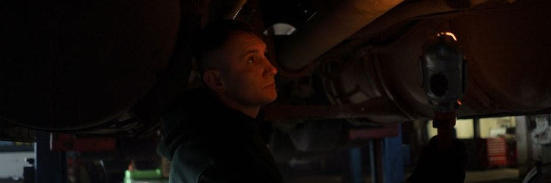

자동차 정기검사 과태료, 2026년 — 4만원부터 60만원까지 지연일수 계산표

발행일 2026-09-26
30초 요약
| 항목 | 내용 |
|---|---|
| 대상 | 검사유효기간이 지난 모든 등록 자동차 (비사업용 승용차는 신조차 최초 4년, 이후 2년마다) |
| 기본 과태료 | 검사기간 다음날부터 30일 이내 4만원 |
| 가산 | 31일째부터 3일 초과 시마다 2만원씩 추가 |
| 상한 | 지연 115일 이상이면 60만원 (최고액) |
| 검사 가능 기간 | 검사유효기간 만료일 전 90일 ~ 후 31일. 이 안에 합격하면 만료일에 받은 것으로 봅니다 |
| 확인 방법 | 자동차등록증(전산증명)의 정기검사 유효기간란, 또는 자동차365·교통안전공단 검사예약 화면에서 차량번호로 조회 |
1. 누가 대상인가 — "검사 언제 받았더라" 기억 안 나면 대상이다
정기검사는 차를 계속 안전하게 탈 자격이 있는지 확인하는 검사로, 비사업용 승용차와 피견인자동차(카라반 등)는 신차 등록 후 최초 4년, 그 뒤로는 2년마다 받습니다. 사업용 승용차는 최초 2년 이후 1년, 경·소형 승합·화물차는 1년, 대형 화물차는 차령 2년을 넘기면 6개월마다처럼 차종·용도·차령에 따라 주기가 달라집니다. 검사유효기간은 보통 직전 검사를 받은 날 다음 날부터 다시 계산되는데, 검사 가능 기간(만료일 전 90일~후 31일) 안에 미리 받아도 유효기간은 종전 만료일 다음 날부터 이어지므로 빨리 받았다고 손해가 아닙니다.
내 검사 만료일을 모른다면 자동차365나 교통안전공단 검사예약 사이트에서 차량번호로 조회됩니다. 등록증 유효기간란이 현실적으로 가장 빠른 확인 창구입니다.
2. 과태료는 이렇게 계산된다 — 지연일수 표
과태료는 만료일이 아니라 검사 가능 기간(만료일 후 31일까지)의 다음날부터 지연일수를 세기 시작합니다. 기본 4만원에 31일째부터 3일마다 2만원씩 얹히고, 지연이 115일이면 60만원에서 멈춥니다. 검사를 안 받고 버틴 기간이 곧 과태료 고지서의 숫자입니다.
| 지연 기간 | 과태료 | 계산 |
|---|---|---|
| 30일 이내 | 4만원 | 기본액 |
| 31~60일 | 6만~24만원 | 4만원 + 3일마다 2만원 |
| 61~90일 | 26만~44만원 | 같은 가산 지속 |
| 91~114일 | 46만~60만원 | 같은 가산, 60만원 초과 안 함 |
| 115일 이상 | 60만원 | 최고액 고정 |
예를 들어 만료 후 45일이 지났다면 31일째부터 15일(=5구간)이 가산되어 4만 + 2만×5 = 14만원입니다. "조금만 더 있다가"의 대가가 3일에 2만원씩 찍히는 셈이라, 미룰 이유가 없는 구조입니다.
3. 제외·주의 — 돈보다 무서운 두 가지
- 번호판 영치. 정기검사 미이행 상태가 이어지면 검사 명령이 나오고, 명령 불이행이 1년 이상 지나면 운행정지까지 이어질 수 있습니다. 실제로는 고지서보다 현장 영치가 먼저 도착하는 경우가 많습니다.
- 보험료 할증과 사고 리스크. 검사 지연 이력은 자동차보험 갱신 시 할증 요인으로 작용할 수 있고, 브레이크·조향 불량 상태에서 달리다 나는 사고는 내 과실이 됩니다. 과태료 4만원은 보험료 인상분보다 쌉니다.
- 만료 후 31일 이내 검사는 과태료가 없습니다. 검사 가능 기간으로 보므로 "만료 지나서 받았는데 고지가 왔다"면 지연일수를 계산해 다시 확인하세요. 경형·소형 등 주기가 짧은 차종은 만료월을 놓치기 쉬워 달력에 넣어두는 편이 안전합니다.
- 검사 합격 후에도 '조건부'가 붙을 수 있습니다. 부분불합격 판정을 받으면 정비 후 재검사를 받아야 하는데, 이 재검사 기간을 놓치면 다시 지연으로 잡힙니다.
- 종합검사 지역 차종은 검사 종류가 다릅니다. 배출가스 정밀검사 시행 지역에 등록된 차는 정기검사가 아닌 종합검사 대상일 수 있으니 차량조회로 구분하세요.
4. 서류 — 예약 전에 이것만
- 자동차등록증 (분실 시 전산증명으로 대체 가능)
- 책임보험(자동차보험) 가입 확인서 — 미가입 상태면 검사 자체가 불가하고 별도 과태료가 있습니다. 시스템 조회로 대체되어 별도 서류가 필요 없는 경우가 대부분입니다
- 대리 접수 시 위임장과 대리인 신분증
- 검사 수수료: 차량 규모별 소액(현장 고지 기준)
5. 순서 — 예약부터 재검사까지
- 자동차365 또는 교통안전공단 검사소에서 차량번호로 검사유효기간과 대상 검사 종류를 확인합니다.
- 온라인으로 날짜·장소를 예약합니다(만료일 90일 전부터 가능).
- 지정 정비사업소·검사대행 센터를 방문해 외관·등화·제동·배출가스 순으로 검사를 받습니다. 소요 시간은 통상 10~20분.
- 적합 판정이면 종료. 부분불합격이면 안내받은 항목을 정비하고 재검사 기간 내에 다시 방문합니다.
- 이미 지연된 상태라면 과태료 고지서를 받기 전에 검사를 받고, 고지서가 오면 기한 내 납부하거나 감경·분할 절차를 문의합니다.
6. 안 될 때
- 차량을 팔았거나 폐차했는데 검사가 남았을 때. 이전·말소 등록 시점에 검사 여부가 정리되므로 매도 직전 검사 독촉이 왔다면 매수인 명의이전 절차에서 함께 처리됩니다. 내 앞으로 남은 고지는 이전 완료일 기준으로 정산됩니다.
- 천재지변·도난·압류 등 부득이한 사유로 검사를 못 받았을 때. 시·도에 검사유효기간 연장 또는 검사 유예를 신청할 수 있고, 도난·압류 등 특정 사유는 사유 종료 시점까지 유효기간이 연장된 것으로 봅니다(연장 후 31일 이내 검사).
- 수입·튜닝 차량으로 검사 통과가 반복 실패할 때. 구조변경 이관이 덜 된 경우라면 관할 시·도 차량부서나 교통안전공단 고객센터(1577-0990)에 사전 확인하는 편이 빠릅니다.